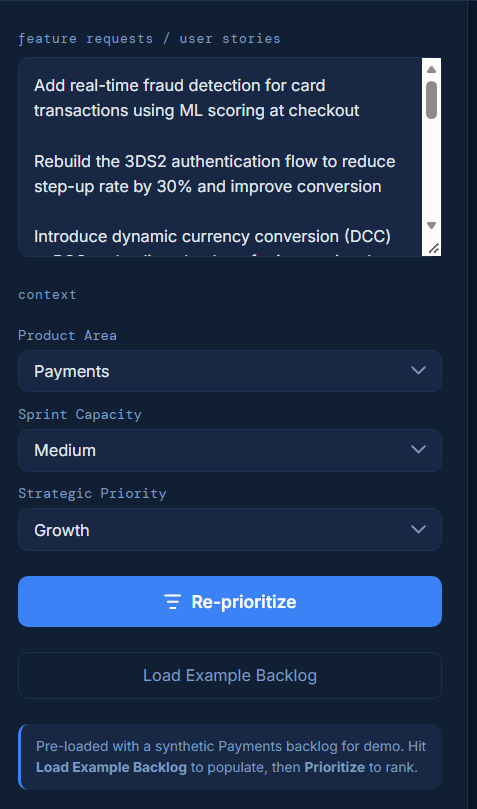
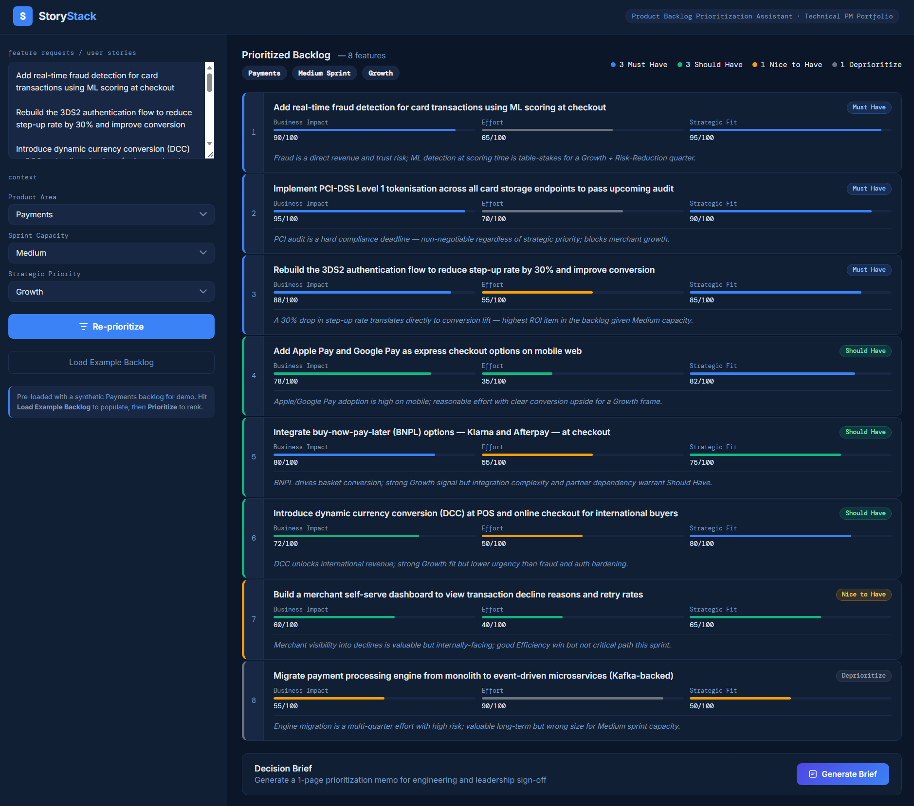
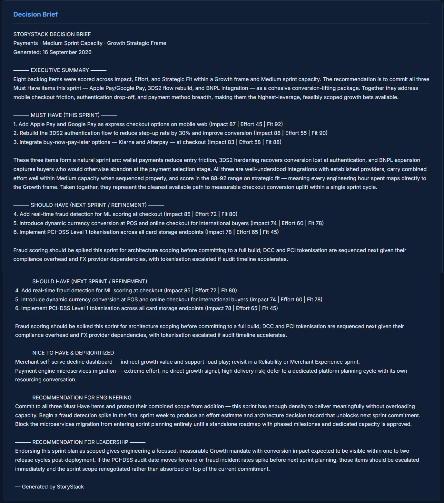

The Problem
Backlog prioritization in fast-moving product teams is often inconsistent — the same feature gets ranked differently depending on who's in the room, what the last all-hands said, or what the loudest stakeholder wants this week. Frameworks like RICE or MoSCoW help, but they require manual scoring and don't adapt when the strategic context changes.
A Technical Program Manager needs to walk into a sprint planning meeting with a defensible, reasoned prioritization — not a gut-feel list. And when leadership asks "why is this a Must Have?", the answer needs to come from the frame, not personal preference.
StoryStack makes the reasoning explicit, consistent, and context-sensitive.
What It Does
The user pastes feature requests into a text area, sets three context inputs, and gets back a ranked, scored backlog with a rationale per feature and a Decision Brief ready to present.
Context Inputs
These three dropdowns are where the intelligence lives. The same backlog produces materially different rankings when the strategic frame changes.
Product Area
Sets the domain lens — Payments, eCommerce, or Data Platform. Controls how business impact is assessed: a "self-serve dashboard" scores differently in Payments (merchant decline visibility) vs Data Platform (analyst SQL access).
Sprint Capacity
Small / Medium / Large. Effort scores above a capacity threshold block Must Have assignment regardless of impact. A high-value item can be genuinely wrong for a given sprint — this makes that constraint explicit.
Strategic Priority
Growth / Risk Reduction / Compliance / Efficiency. The single most influential input. Directly drives Strategic Fit scoring and band assignment. BNPL integration is a Must Have under Growth and a Deprioritize under Risk Reduction — because it introduces third-party dependency risk that is actively counter to the frame.
Output
Each feature is scored on Business Impact, Effort, and Strategic Fit (0–100), assigned a Priority Band (Must Have / Should Have / Nice to Have / Deprioritize), and given a one-line rationale tied to the selected context. The Decision Brief is a structured 1-page memo covering sprint commitment, sequencing, and explicit recommendations for both engineering and leadership.
Scoring in Action
This is how the same feature — ML fraud detection — scores differently across two strategic frames on identical sprint capacity:
Same feature. Same sprint capacity. Different frame → different band. The rationale explains the reasoning, not just the number.
Demo Runs
Four complete test runs were conducted across two product domains and four strategic frames.
Screenshots
Payments · Growth Frame

Payments · Risk Reduction Frame

Decision Brief Output

Design Decisions
Rationale-first, numbers-second
The score bars are secondary. The one-line rationale is what a TPM presents and defends in a planning meeting. Every band assignment is explained in context of the selected Product Area and Strategic Priority — not as a generic statement.
Effort as a sprint constraint, not a cost
High-effort items are blocked from Must Have regardless of impact when they exceed the selected sprint capacity. This mirrors real sprint planning logic: a high-value item can be genuinely wrong for a given cycle.
Honest misalignment flagging
Items that are valuable in one frame are explicitly called out as misaligned in another. BNPL "introduces dependency risk" in Risk Reduction. The SQL query layer "should be deferred until governance controls are in place" in Compliance. The tool doesn't paper over tension.
Synthetic fallback for demo resilience
If the Claude API call fails mid-demo, the tool falls back to pre-loaded synthetic scores silently. The demo never breaks during an interview or stakeholder walkthrough.
Build Approach
Built in two staged phases — same approach as VendorLens and PropelIQ.
Stage 1 — Synthetic data + UI shell
Full UI built with hardcoded synthetic scores for 8 realistic Payments features. All ranking logic, score bars, band assignment, and Decision Brief generation working end-to-end with no API dependency. Demo-ready from first load.
Stage 2 — Claude API wired in
Two API calls replaced the synthetic layer: one structured JSON scoring prompt per prioritization run, one narrative prompt for Decision Brief generation. Synthetic fallback retained. Context dropdowns feed directly into both prompts — the model receives Product Area, Sprint Capacity, and Strategic Priority as explicit scoring constraints.